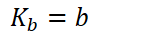
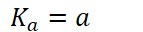

Acid-base neutralization
Acid + base => salt + water
Usually results in some remaining hydronium/hydroxide
Steps to approach acid-base reactions:
Dilution: account for adding volume to volume
Stoichiometry: Any strong acid and base will proceed with forward reaction (making product) until the limiting reactant runs out
Equilibrium: If weak acids/bases are involved, equilibrium calculations are necessary
For any acid and its conjugate base/weak base/conjugate acid
Strong acid and strong base: usually DILUTION and STOICHIOMETRY
Determine molarities with diluted volume
Perform stoichiometry with molarities, assuming reaction goes to completion
Find pH based on leftover hydronium or hydroxide
Weak acid and strong base: DILUTION, STOICHIOMETRY, and EQUILIBRIUM
Conjugate base will be created
Need to perform equilibrium with conjugate base
Results from stoichiometry will be brought into initial conditions of equilibrium
Equilibrium is partial disassociation of acid in water
Strong acid and weak base: DILUTION, STOICHIOMETRY, EQUILIBRIUM
Creates conjugate acid
Equilibrium needs to be done on resultant conjugate acid (and leftover base/acid if present)
Equal amount of acid and strong base is equivalence point
When [acid]=[base] (co-limiting reactants)
pH is dictated by reaction of conjugate base (or conjugate acid if the reaction is weak base + strong acid)
When exactly half of the acid has been neutralized, this is called the half equivalence point
For weak base/strong acid:
{width="1.4791666666666667in" height="0.3333333333333333in"}
For weak acid/strong base:
{width="1.4895833333333333in" height="0.3333333333333333in"}
Buffer solution
Weak acid + conjugate base OR weak base + conjugate acid
Will resist changes in pH upon small amounts of acid or base
Weak acid (or conjugate weak acid) will react with added base
Weak base (or conjugate weak base) will react with added acid
Four ways to make a buffer solution:
Partial neutralization of a weak acid with a strong base
Partial neutralization of a weak base with a strong acid
{width="6.802083333333333in" height="0.3541666666666667in"}
{width="7.40625in" height="0.3541666666666667in"}